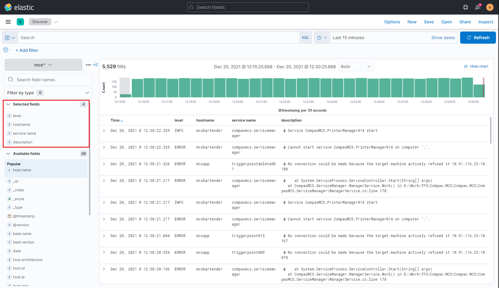

Uso de Kibana
Por medio de Kibana se interactúa con los datos en Elasticsearch. Para entrar se escribe en el navegador la dirección del servidor donde se instaló y el puerto. Como se vió en la primera parte de la Arquietctura General para este proyecto es 10.91.116.215:5601. Una vez dentro se piden credenciales, inicialmente se usan la de los usuarios built-in, despues se pueden crear adicionales.
Una vez dentro se presentan varios widgets con funcionalidades de Kibana, sin embargo es más fácil ubicar todas las opciones por medio del menu desplegable:
Consulta de Indices
Cuando se configuró Logstash se vio que los indices se crean por sistema, host, nombre del servicio y se rotan cada mes, es decir, se creará uno nuevo al inicio del mes. Kibana cuenta con un apartado de herramientas de desarrollador para consumir la API de Elsaticsearch, del menu de navegación dar click en Dev Tools
Si por ejemplo se envia GET _cat/indices/

En la parte derecha se ve el nombre de todos los indices que existen y que tienen la estructura que se mencionó anteriormente, resaltando que todos comienzan por el nombre del sistema al que pertenecen, entonces si se envía GET _cat/indices/mcs* se obtiene sólo los del MCS
A lo anterior se le conoce como patrón de indices y Kibana se basa en ello para saber sobre qué indices buscar al realizar una consulta en la sección de Discover
Creación de patrón de indice
Del menú desplegable seleccionar Stack Management / Index Patterns y dar click en Creat index pattern
Se ingresa el nombre del patrón que deberán cumplir los indices, sin haber escrito nada se puede ver que actualmente existen 87.
Ahora al poner mcs* obtenemos sólo aquellos de ese sistema. Dar click en Create index pattern, como ya se había agregado (este y de todo los sistemas) aparece un error, pero para nuevos patrones no aparecerá.

Consulta de Logs
Del menú desplegable selecionar Discover, allí se podrá hacer la consulta de los logs con algunos filtros por default:
donde:
- 1: Nombre del patrón del indice. Con la configuración actual es lo mismo que buscar por sistema.
- 2: Campos disponibles que contiene cada documento.
- 3: Contenido del documento filtrado por campos
- 4: Filtro de tiempo
Seleccionando algunos campos se tiene una mejor visualización de los documentos

De ahí se obtiene logs de todo tipo, para filtrar sólo de tipo error, seleccionar Add Filter y agregar los siguientes datos

Y así con cualquier otro campo disponible, por ejemplo para un servicio en particular: